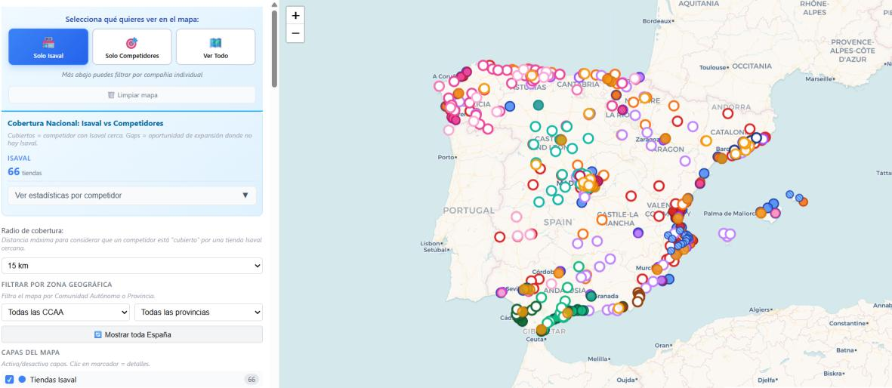
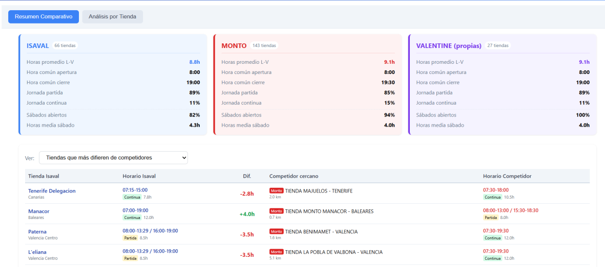
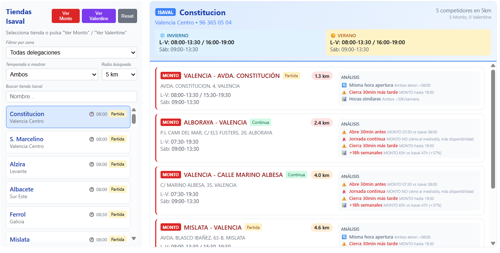

En las reuniones de dirección es habitual que surjan preguntas que todos consideran importantes, pero que pueden ser difíciles de responder con datos inmediatos. ¿Tenemos la presencia geográfica adecuada? ¿Nuestros horarios de apertura son competitivos? ¿Dónde tiene sentido seguir creciendo? Son preguntas legítimas y necesarias para orientar el plan estratégico, pero chocan con una realidad operativa: la información existe, pero está dispersa entre equipos, documentos, webs y conocimiento de personas concretas.
No es que falte conocimiento. Si se pregunta a cada director de zona o comercial, sabrá decir quién compite con él, a qué distancia o qué horario tiene la tienda de enfrente. El problema es que ese conocimiento vive fragmentado y es difícil tener la imagen completa. En el pasado, obtener esa visión habría requerido un proyecto de consultoría de varias semanas con recopilación manual, homogeneización de fuentes y elaboración de informes.
El primer caso surgió directamente de una conversación del consejo sobre la presencia territorial de Isaval. La pregunta era clara: ¿cómo se posiciona nuestra red de tiendas frente a la competencia a nivel nacional? Con ayuda de la IA se construyó una web que muestra en un mapa interactivo nuestras tiendas junto a más de 450 puntos de venta de varios competidores. El sistema permite filtrar por competidor, región o radio de influencia.
Lo que habría sido un informe estático de consultoría se convirtió en una herramienta navegable que soporta conversaciones estratégicas en tiempo real. Alguien pregunta qué ocurre en una zona concreta y en segundos aparece una respuesta visual con detalle suficiente para discutirla.

El segundo caso siguió la misma lógica. Ante la pregunta de si nuestros horarios de apertura son competitivos, la herramienta incorporó una comparativa que cruza los horarios de nuestras tiendas con los de Monto y Valentine. A nivel agregado, muestra indicadores como el porcentaje de tiendas con jornada partida o que abren los sábados. En el detalle, identifica automáticamente las tiendas que más difieren de sus competidores cercanos y aquellas que cierran en sábado mientras la competencia próxima permanece abierta.


Lo que estos casos demuestran es un modelo replicable. La IA reduce drásticamente el coste de consolidar información heterogénea en una visión estructurada. Eso abre la puerta a aplicar el mismo enfoque a otras preguntas estratégicas que hoy se resuelven picando datos manualmente durante semanas o que directamente no se abordan por falta de tiempo.
La IA no sustituye el criterio estratégico ni el conocimiento del terreno. Los equipos comerciales siguen siendo quienes mejor conocen su zona y su competencia directa. Lo que hace la IA es habilitar una capa de visión global que antes era difícil de conseguir: convertir conocimiento disperso en una imagen unificada y navegable, y ayudarnos a que preguntas que antes se quedaban en el aire se conviertan en análisis que realmente se hacen.
La pregunta no es menor que la respuesta.
Muchas preguntas estratégicas no se trabajan porque el coste de responderlas es demasiado alto. Cuando ese coste baja drásticamente, la organización puede pensar mejor y con mayor frecuencia sobre cuestiones que antes quedaban pendientes.
La IA aquí no sustituye criterio; lo amplifica.
La decisión sigue siendo humana. Lo que cambia es la capacidad de reunir contexto, contrastar información y hacer navegable una visión que antes era costosa, lenta o directamente inaccesible.
El patrón es escalable.
Si se ha podido hacer con presencia geográfica y horarios, puede extenderse a comparativas de producto, red comercial, competencia o cualquier otra cuestión estratégica basada en datos dispersos y fuentes heterogéneas.
En definitiva, este caso demuestra que la IA puede convertir preguntas estratégicas que antes quedaban sin respuesta ágil en herramientas reales de análisis para dirección.